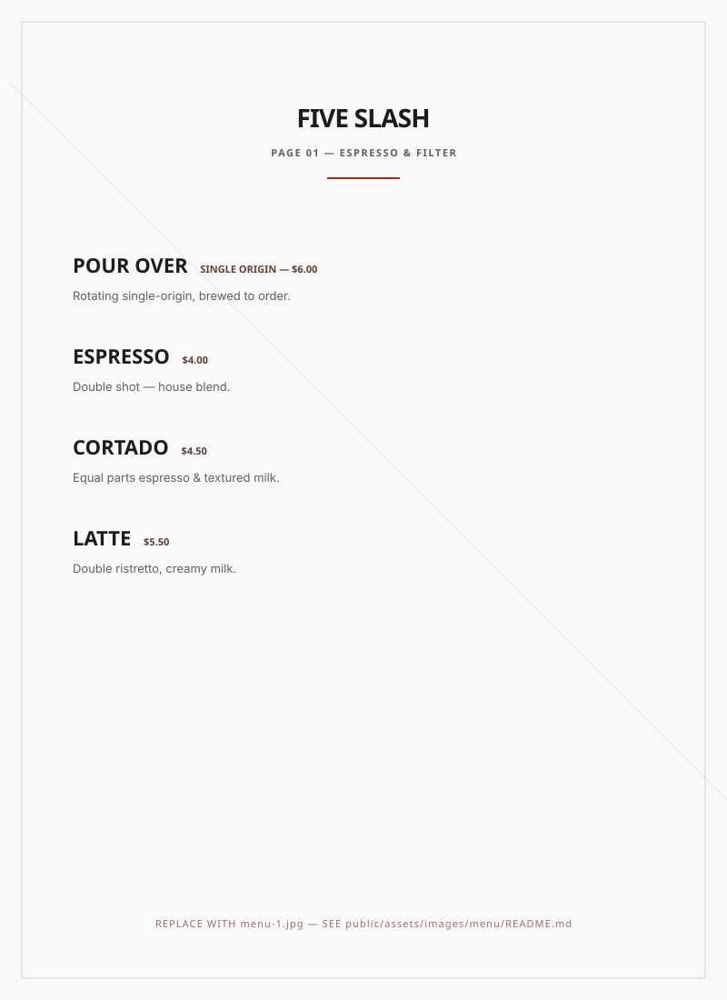
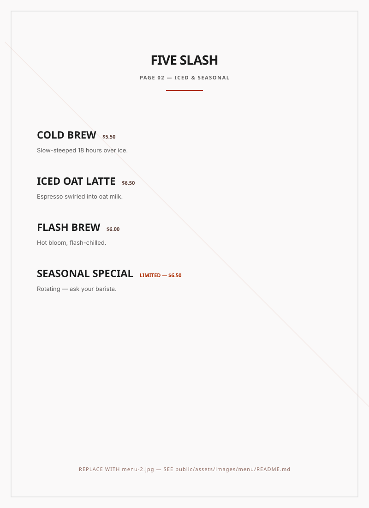

RESTAURANT MENU — 5/
MENU/
Two pages — Espresso & Filter / Iced & Seasonal. Tap any page to enlarge. Editorial frames keep the focus on the menu itself.
2 PAGES — PORTFOLIO

PAGE 01 — ESPRESSO & FILTER TAP TO ENLARGE
PAGE 02 — ICED & SEASONAL TAP TO ENLARGETip: Export your designed menu as menu-1.jpg and menu-2.jpg and drop them in public/assets/images/menu/ — the page will automatically use the JPGs.